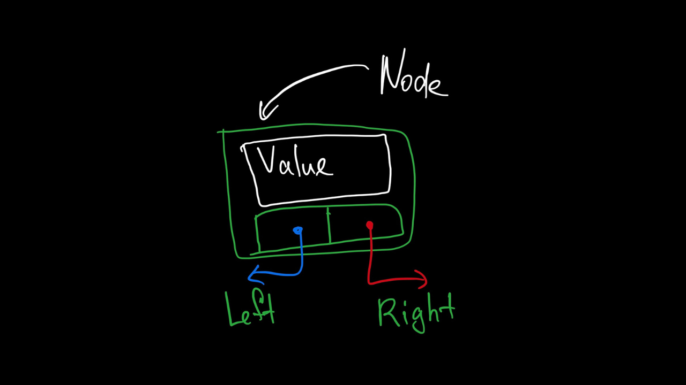
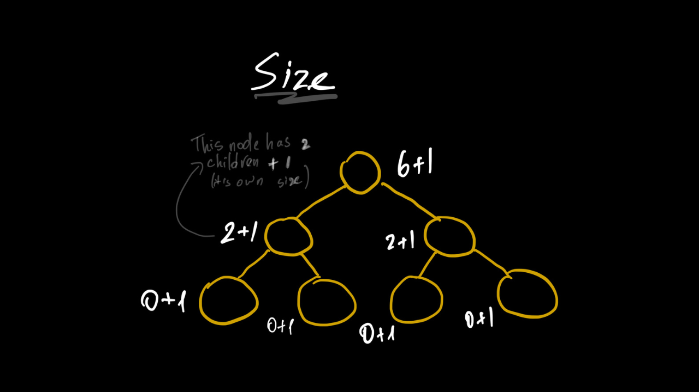
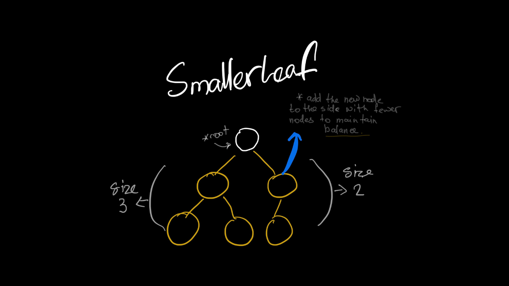
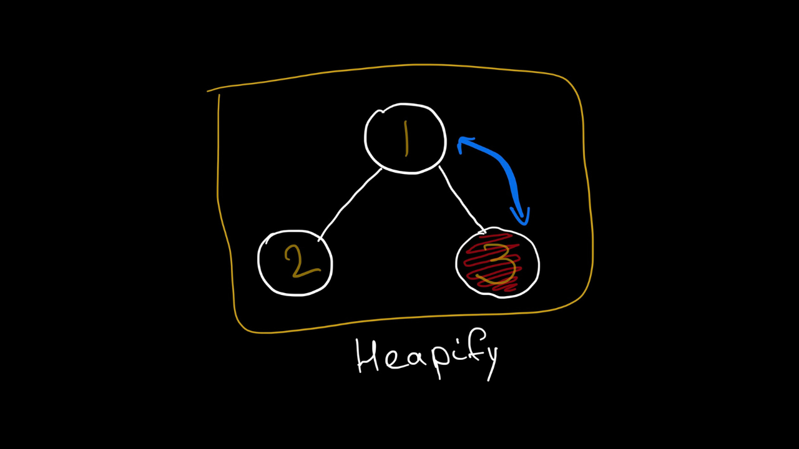
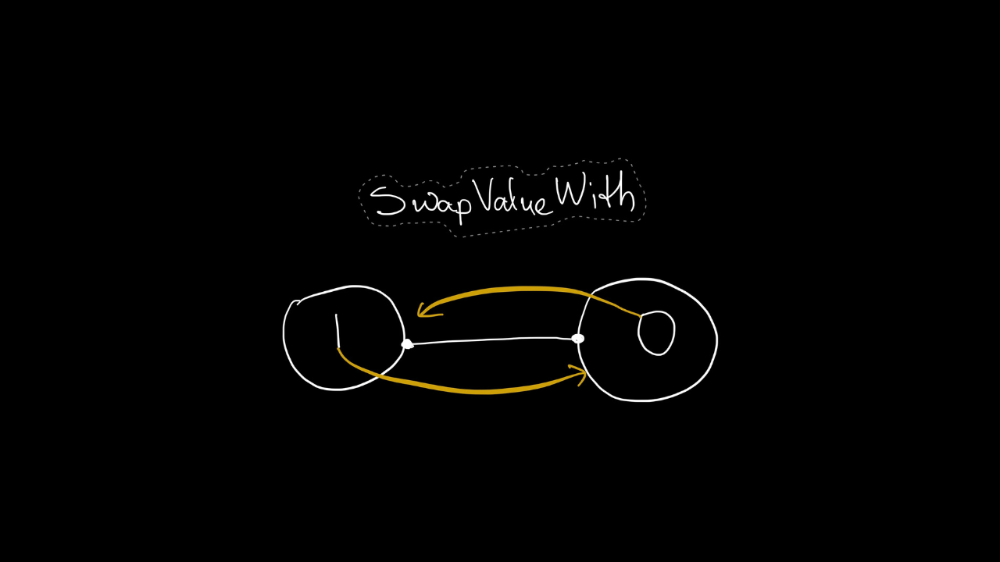

Binary Heap C# | Data Structure
Binary Heap data structure ma'lumotlarni to'plamga juda tez qo'shish O(log N) va shu to'plamdagi eng katta/kichik elementni konstant O(1) vaqtda o'qish imkonini beradigan complete tree]. U heap sort, priority queue va Dijkstra's algoritmlarini o'zagi hisoblanadi.
Intro 👋
Uni 2 ta asosiy hususiyatlari bor:
✔️ Complete Tree ✔️ Heap Property
Ushbu post orqali siz Binary Heapni C# dasturlash tilida eng sodda usulda tushintirilishi visual elementlar orqali o'rganasiz 🚀
Note
Ish maydonini tayyorlab olish uchun Heap.cs nomli fayl yarating va uni ichida empty Heap deb nomlangan class yozing.
public class Heap<T> where T : IComparable<T>
Heapstrukturaasi ichida istalgan turdagi ma'lumot saqlay olishni ta'minlash uchun uni genericHeap<T>qilib e'lon qilamiz.- Heapdagi
where T : IComparable<T>constrainti heap propertyni saqlash uchun solishtirishda ishlatiladi.
Node class 🥬
Data Stucture olamida node iborasi juda ko'p ishlatiladi. Ular strukturani o'zagi bo'lib ma'lumotlarni o'rab turishda ishlatialdi.
Binary Heap strukturasida har bir node quyidagi elementlarni o'z o'chiga oladi.

💡 Node klasi faqat Heap kaslini ichki amallarida ishlatigani uchun uni private qilib Heap class ichida elon qilamiz.
public class Heap<T> where T : IComparable<T>
{
private class Node(T value)
{
public T Value { get; set; } = value;
private Node right = default;
public ref Node Right => ref right;
private Node left = default;
public ref Node Left => ref left;
DETAIL
💡 Node classida C# 12dagi primary constructor hususiyati ishlatilgan.
private class Node(T value)
RightvaLeftchild-nodelarni keyinchalik to'liq manipulatsiya qila olishimiz va C# da propertylargarefkalit so'zini qo'yish mumkin emasligi uchunreforqali private backing fieldlar e'lon qilib ma'lumotlarni shu fieldlarda saqlaymiz. Keyin u fieldlarga propertylar orqali murojat qilamiz.
private Node right = default;
public ref Node Right => ref right;
private Node left = default;
public ref Node Left => ref left;
💡 Keling endi Node classiga keynchalik asqotadigan helper methodlar qo'shib chiqamiz.
Node.Size 📏
DETAIL
public int Size => (left?.Size ?? 0) + (right?.Size ?? 0) + 1;
Node classidagi Size propertysi recursive tarzda joriy Node hajmini aniqlaydi. Har bir nodening sizei 1 + Left.Size + Right.Sizega teng.

Node.SmallerChild

⭐ Endi Node classini asosiy methodlariga o'tamiz.
Node.Heapify()
DETAIL
Heapify funksiyasi heap propertyni saqlab qolishni ta'minlaydi.
public void Heapify()
{
if(Left is not null && Left.Value.CompareTo(Value) < 0)
SwapValueWith(Left);
if(Right is not null && Right.Value.CompareTo(Value) < 0)
SwapValueWith(Right);
}

Warning
Rasmda Max-heap ifodalangani uchun 3 va 1 qiymatlari swap qilinishi kerak.
Node.SwapValueWith(Node other)
DETAIL
Ushbu funksiya joriy node qiymatini berilgan node qiymati bilan alishtiradi.
public void SwapValueWith(Node other) => (other.Value, Value) = (Value, other.Value);
- E'tibor bering, faqat qiymatlar alishtirilgani uchun bu funksiyada hech qanday
refkalit so'zi ishlatilmagan.

⭐ Ana endi navbat Heap classini o'ziga keldi. Uni memberlari haqida birma-bir to'xtalamiz.
Heap.root
Heap classida root nomli private field yasab olamiz. U data strukturamiz boshlanish nuqtasi vazifasini bajaradi va birinchi nodega reference bo'ladi. Har safar Heapni traverse qilish shu objectdan boshlanadi.
private Node head = default;
Heap classida tashqariga ko'rinuvchi 3ta asosiy public methodlari mavjud. Ularni har biri haqida quyida batafsil to'xtalamiz.
Print()-Heapclassini traverse qilib har bir node qiymatini chop etish uchun.Enqueue(T value)- yangi qiymatni kerakli joyga joylash uchun.T Dequeue()- eng tepadagi birichi elementni qaytarib uni o'chirib yuboradi va heap propertyni qayta hisoblab qo'yadi.
Heap.Enqueue
public void Enqueue(T value) => EnqueueRecursive(ref head, new Node(value));
private void EnqueueRecursive(ref Node current, Node newNode)
{
if(current is null)
current = newNode;
else if(current.Left is null)
current.Left = newNode;
else if(current.Right is null)
current.Right = newNode;
else
EnqueueRecursive(ref current.SmallerChild, newNode);
current.Heapify();
}
DETAIL
Ko'rib turganingizdek Enqueue() public methodi shunchaki EnqueueRecursivega kerakli parametrlarni uzatib yuboradi holos. Asosiy logika ushbu private recursive method ichida amalga oshadi.
Yangi elementi qo'shish O(log n) vaqt talab qiladi.
Logikaga e'tibor bering, shunchaki recursive tarzda
null referenceya'niHeaptubiga yetib tushmaguncha kichikroq shox tanlab, shu shox bo'ylab tushib boriladi.null referencega yetib kelganda, yangi node shu yerga joylanadi.refimkoniyati bilan, current obyekti qiymatinullbolsa, ushbu obyekt referenci yangi yaratilgan nodega qaratib qo'yiladi. Let that sink in! 🤯.Method oxirida
current.Heapify();chaqiruvi heapni eng tubiga tushib ortga rekursiv qaytish vaqtida har bir nodening heap propertysini qayta hisoblab qo'yadi 💥.
Heap.Dequeue
public T Dequeue()
{
if(head is null)
throw new InvalidOperationException("Heap is empty.");
var temp = head.Value;
HeapifyDownRecursive(ref head);
return temp;
}
private void HeapifyDownRecursive(ref Node current)
{
if(current.Left is null && current.Right is null)
current = null;
else if(current.Right is null)
{
current.SwapValueWith(current.Left);
HeapifyDownRecursive(ref current.Left);
}
else if(current.Left is null)
{
current.SwapValueWith(current.Right);
HeapifyDownRecursive(ref current.Right);
}
else if(current.Left.Value.CompareTo(current.Right.Value) < 0)
{
current.SwapValueWith(current.Left);
HeapifyDownRecursive(ref current.Left);
}
else
{
current.SwapValueWith(current.Right);
HeapifyDownRecursive(ref current.Right);
}
}
DETAIL
Dequeue() - bu root-node o'chiriladi va uni o'rniga ikkita childdan biri priority bo'yicha tanlab olinadi, va huddi shu tartibda uni childlari ham bittadan yuqoriga siljiydi
Dequeue ham Enqueue kabi
O(log n)** vaqt talab qiladi.Avvalo heap empty bo'lsa
InvalidOperationExceptionotamiz.Yo'qsa, rekursiv tarzda eng kichik qiymatli elementni
currentbilan swap qilib, pastga qarab ketaveramiz.leaf-nodega yetib borganimizda, uni
null referencega tenglab qo'yamiz.Bu orqali osha eng oxiridagi nodeni o'chirgan bo'lamiz. Xotirani bo'shatishni
GCo'zi qoyillatadi.
Heap.Print
public void Print()
{
var queue = new Queue<Node>();
if(head is not null)
queue.Enqueue(head);
while(queue.Any())
{
var node = queue.Dequeue();
Console.Write("{0} ", node.Value);
if(node.Left is not null)
queue.Enqueue(node.Left);
if(node.Right is not null)
queue.Enqueue(node.Right);
}
Console.WriteLine();
}
DETAIL
Print funksiyasida qiymatlarni to'g'ri ketma ketlikda chop etish uchun Queue strukturasidan foydalanilgan.
Queueda nodelar qolmaguncha birinchi nodeni olib chop etamiz va uni child nodelarini queuega qo'shib ketaveramiz.- Shu orqali har bir qatordagi node chapdan o'ngga qarab bir xilda chop etib ketaveramiz.
Heap.Print
Vanihoyat Heap klasimizdan obyekt olib uni sinab ko'rsak bo'ladi 😎
// Program.cs: testing
var heap = new Heap<int>();
int[] sonlar = [2, 3, 1, 5, 0, 6, 4];
foreach(var son in sonlar)
heap.Enqueue(son);
heap.Print();
for(int i = 0; i < 10; i++)
Console.WriteLine(heap.Dequeue());
Console.WriteLine(heap.Dequeue()); // Exception
| ⭐ To'liq kodni mana bu yerda topasiz. ⭐ |
|---|
Kontent yoqqan bo'lsa unga izoh qoldirish va do'slaringizga ulashish orqali sifatli o'zbek tilidagi kontentni qo'llab quvvatlashingizni so'raymiz ❤️.
HINT
Keyingi maqolada Binary Heap Data Structureni eng ko'p uchraydigan use caselarini misollar orqali o'rganamiz.
Shu kabi sifatli o'zbek tilidagi kontentni qo'llab quvvatlash uchun bizni Telegram Kanalimizga obuna bo'ling.